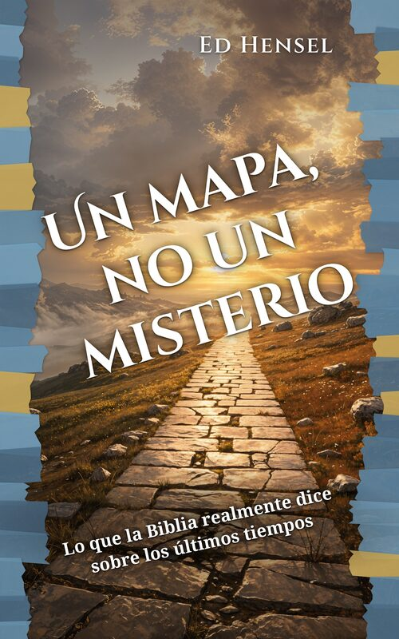

Un mapa, no un misterio
¿Le han cansado los calendarios de lunas de sangre, las cuentas regresivas para el rapto y los cuadros proféticos que se corrigen una y otra vez?
Un mapa, no un misterio es para todo cristiano que alguna vez salió de un sermón sobre los últimos tiempos más confundido que esperanzado.
Este libro parte de tres perspectivas entrelazadas que fueron la corriente principal del pensamiento cristiano durante quince siglos, antes de que John Nelson Darby introdujera algo muy distinto en la década de 1830. Muestra que mucho de lo que hoy se presenta como profecía futura ya se cumplió en una historia fechada y comprobada, y que eso no achica su esperanza: la hace más grande, más firme y más alegre.
Lo que descubrirá:
- Un recorrido versículo por versículo por Mateo 24
- El impactante relato de testigos presenciales de la caída de Jerusalén en el año 70 d. C.
- La identidad de la bestia y el significado del 666
- El argumento amilenarista del reinado presente de Cristo
- La fidelidad perdurable de Dios hacia el pueblo de Israel en Romanos 9 al 11
- Cuatro grandes realidades que aún están por venir: el regreso corporal de Cristo, la resurrección general, el juicio final y la nueva creación
Ideal para grupos pequeños: cada capítulo termina con preguntas para reflexionar y dialogar.
Escuche el audiolibro, gratis
Versión íntegra, capítulo por capítulo
Se publican nuevos capítulos cada semana. Suscríbase al canal para no perderse ninguno.
Ver la lista en YouTube •
Ir al canal de YouTube
Contenido del libro
- Introducción
- Capítulo 1 Un mapa, no un misterio
- Capítulo 2 Cómo leer la profecía como la leía Jesús
- Capítulo 3 Tres llaves que lo abren todo
- Capítulo 4 “Esta generación”
- Capítulo 5 El sermón del monte de las Olivas
- Capítulo 6 Cuando la historia confirmó la profecía
- Capítulo 7 Viniendo sobre las nubes
- Capítulo 8 El día del Señor aún no ha llegado
- Capítulo 9 La llave del Apocalipsis: empiece por la fecha
- Capítulo 10 Babilonia, la bestia y el 666, descifrados
- Capítulo 11 Los mil años
- Capítulo 12 Un solo olivo, una sola familia
- Capítulo 13 Las setenta semanas de Daniel
- Capítulo 14 La tierra, el templo y las promesas
- Capítulo 15 El día de Jehová
- Capítulo 16 Ya, pero todavía no
- Capítulo 17 Lo que aún está por venir
- Capítulo 18 Una mejor perspectiva, una vida mejor
- Conclusión
- Apéndice
Sobre el autor
Ed Hensel es pastor y evangelista desde 1979. Predica, enseña y ayuda a iniciar iglesias en casas. Escribió este libro para dar a los creyentes un mapa claro, bíblico y lleno de esperanza de los últimos tiempos.
Las citas bíblicas son de la Santa Biblia Reina-Valera 1909 (dominio público), con la ortografía actualizada.